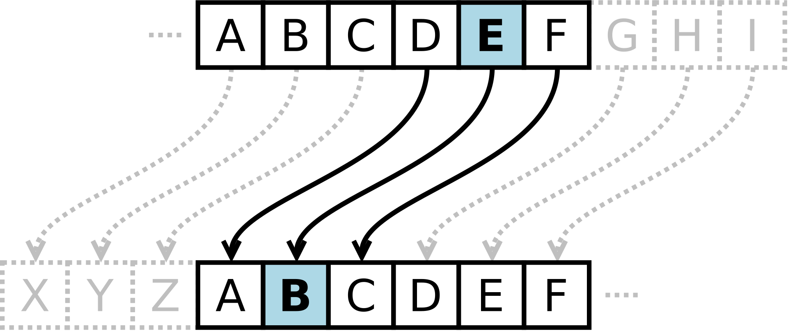

Цезарова шифра¶
Један од великих војсковођа који је користио шифроване поруке био је Јулије Цезар, око 50. године пре нове ере. Када је Цезар слао поруке својим генералима, шифровао их је тако што је слова у тексту померао за одређени број места у азбуци. Примаоци поруке су могли да је дешифрују јер су знали вредност помераја — док су сви остали видели само бесмислен текст.
На пример, ако напишеш NIKOLATESLA и свако слово помериш три места удесно:
A B C D E F G H I J K L M N O P Q R S T U V W X Y Z
X Y Z A B C D E F G H I J K L M N O P Q R S T U V W
Слово N постаје K, I постаје F и тако даље. Дакле, свако слово се замењује другим словом које је одређени број позиција даље у азбуци. Када се дође до краја азбуке, наставља се од почетка. Резултат померања за три слова удесно је шифрована порука KFHLIXQBPIX. Са друге стране, ако свако слово у добијеној речи помериш три слова улево:
A B C D E F G H I J K L M N O P Q R S T U V W X Y Z
D E F G H I J K L M N O P Q R S T U V W X Y Z A B C
Слово K постаје N, F постаје I и тако даље. Резултат овог померања је оригинална дешифрована порука NIKOLATESLA.

Задатак за размишљање¶
Размисли како би направио конзолну апликацију у било ком програмском језику која ће шифровати и дешифровати поруке користећи Цезарову шифру. Дати су неки савети. Кд их прочиташ имаћеш простор да унесеш шифру.

Први ученик (возач) треба да се фокусира на синтаксу док пише код за шифровање поруке. Други ученик (навигатор) треба да прегледа сваки ред кода док се куца, тражи грешке, поставља питања и предлаже побољшања. Након тога, ученици мењају улоге и настављају са писањем кода за дешифровање.
Дозвољена азбука за поруке (и за отворени и за шифровани текст) може да садржи само мала слова енглеске абецеде:
Σ = { a, b, c, d, e, f, g, h, i, j, k, l, m, n, o, p, q, r, s, t, u, v, w, x, y, z }
Размаци, велика слова, бројеви и други знакови нису дозвољени.
У првој линији улаза налази се порука m дужине највише сто карактера, у другој линији цео број n који представља вредност помераја (\(1 \leq n < 26\)), а у трећој линији цео број s који представља смер шифровања. Ако је \(s=1\), онда треба шифровати m, а ако је $s=2, онда треба дешифровати m`.
Тест пример 1¶
Ако је улаз:
nikolatesla
3
1
излаз треба да буде:
kfhlixqbpix
Тест пример 2¶
Ако је улаз:
kfhlixqbpix
3
2
излаз треба да буде:
nikolatesla
Уради задатак¶
Савети за решење¶
Пошто енглеска абецеда има 26 слова, позиција сваког слова може се представити бројем од 0 до 25.
a → 0
b → 1
c → 2
…
z → 25
Да би се шифровало слово, можеш користити следећу формулу:
new_letter_position = (current_letter_position + shift_value) mod 26
original_position представља нумеричку вредност слова у азбуци, shift_value представља број позиција за померај (1–25), а mod 26 обезбеђује да се резултат врати на почетак азбуке ако пређе слово z.
Да би се дешифровало слово, можеш користити следећу формулу:
new_letter_position = (current_letter_position - shift_value + 26) mod 26
Слично као код шифровања, али се вредност помераја одузима, а + 26 обезбеђује да вредност не постане негативна пре примене mod 26.
Сложенији задаци са Цезаровом шифром (опционо)¶
Прошири дозвољену азбуку¶
Направи конзолну апликацију у било ком програмском језику која ће шифровати и дешифровати поруке користећи Цезарову шифру. Дозвољена азбука за поруке (и за отворени и за шифровани текст) може да садржи мала и велика слова енглеске абецеде, размаке, бројеве и знакове интерпункције!
Апликација треба да шифрује или дешифрује само мала и велика слова. Размаци, бројеви и знакови интерпункције треба да остану непромењени током шифровања или дешифровања.
У првој линији улаза налази се порука m дужине највише сто карактера, у другој линији цео број n који представља вредност помераја (\(1 \leq n < 26\)), а у трећој линији цео број s који представља смер шифровања. Ако је \(s=1\), онда треба шифровати m, а ако је $s=2, онда треба дешифровати m`.
Користи функције¶
Направи две функције: једну за шифровање порука и једну за дешифровање порука. Користи направљене функције у главном програму.
Овде можете радити у пару - једна особа треба да шифрује поруку, а друга да је дешифрује!
Направи класу¶
Направи класу CaesarCipher која садржи:
конструктор са параметром који прихвата вредност помераја и обезбеђује да је вредност у дозвољеном опсегу,
приватно својство за чување вредности помераја, са getter и setter методама,
јавну методу за шифровање поруке,
јавну методу за дешифровање поруке и
опционално, приватну методу за обраду порука коју користе обе методе.
Користи направљену класу у главном програму.
Прихвати аргументе командне линије¶
Уместо чекања на унос корисника, направи конзолну апликацију која прихвата следеће аргументе командне линије:
аргумент
mза поруку,аргумент
nза вредност помераја (0до25), иаргумент
sза смер шифровања (1за шифровање,2за дешифровање).
Шифруј и дешифруј фајлове¶
Искористи досадашње знање да направиш конзолну апликацију за шифровање и дешифровање текстуалних фајлова. Твоја апликација треба да прихвата следеће аргументе командне линије:
аргумент
mза име фајла (или путању),аргумент
nза вредност помераја (0до25), иаргумент
sза смер шифровања (1за шифровање,2за дешифровање).